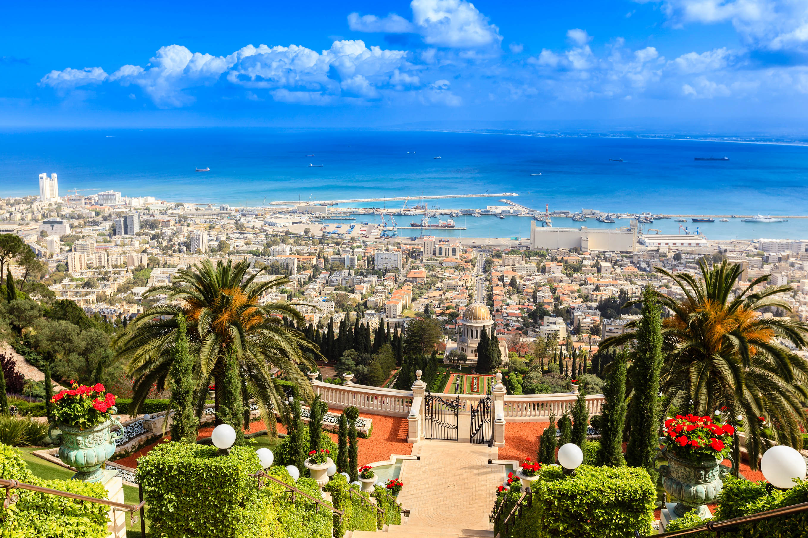

Israel es un país de microclimas, lo que significa que no importa cuándo decida visitarlo, siempre tendrá un lugar al que ir. Caliente como un horno en verano, el sur de Eilat es ideal en invierno. Jerusalén es visitable todo el año, pero más templada en primavera y otoño. Tel Aviv tiene inviernos suaves y lluviosos y veranos mediterráneos calurosos. Solo hay que estar atento al calendario judío, porque la mayoría de los comercios cierran y los servicios públicos se detienen durante las festividades más importantes, como la Pascua judía y Rosh Hashana.
Volver a la página principal 